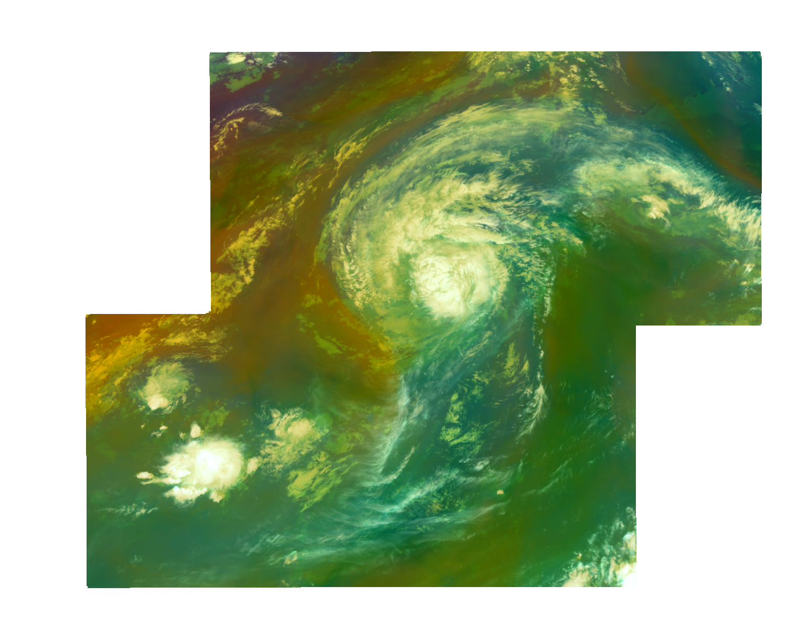
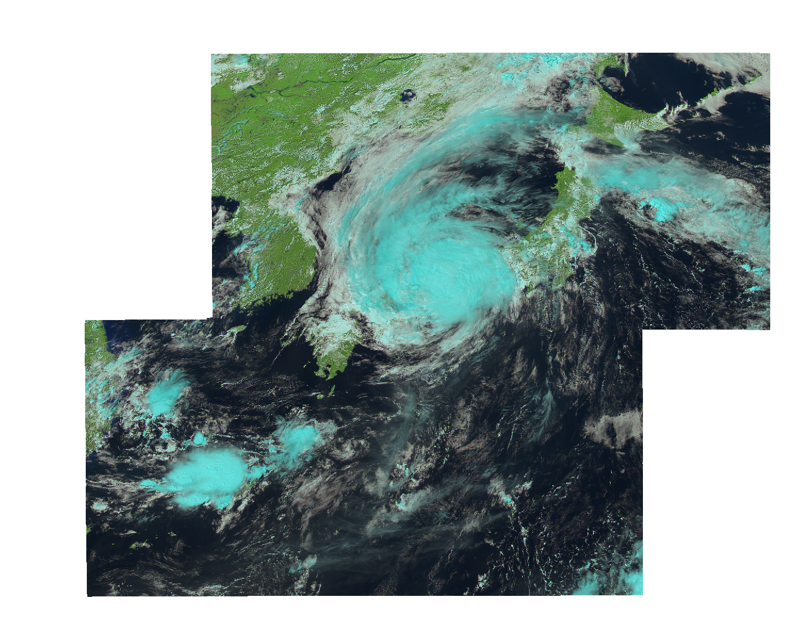
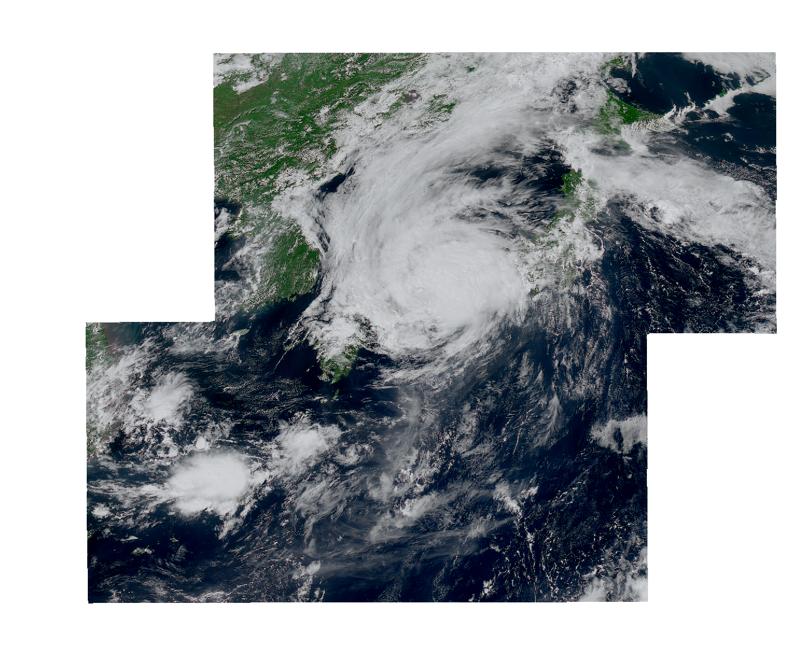

This notebook is developed during the pythia cook-off at NCAR Mesa-Lab Boulder Colorado, June 12-14, 2024
Participants in the workshop event have the chance to practice collaborative problem-solving and hands-on learning in the field of Python programming.
This notebook is part of the Breakout Topic: Geostationary on AWS, lead by Jorge Humberto Bravo Mendez jbravo2@stevens.edu, from Stevens Institute of Technology
Advanced Himawari Imager (AHI) data with Satpy
Using Satpy to read and Advanced Baseline Imager (ABI) data from GOES-R satellites. Here’s a step-by-step guide:
Imports
import warnings
warnings.filterwarnings('ignore')
warnings.simplefilter('ignore', SyntaxWarning)
from satpy.scene import Scene
from satpy.utils import debug_on
from datetime import datetime
from glob import glob
Starting to create satpy scenes
sat_files = glob("input/HI9_AHI_L1b_JP/*")
sat_files
['input/HI9_AHI_L1b_JP\\HS_H09_20230815_0430_B01_JP02_R10_S0101.DAT.bz2',
'input/HI9_AHI_L1b_JP\\HS_H09_20230815_0430_B02_JP02_R10_S0101.DAT.bz2',
'input/HI9_AHI_L1b_JP\\HS_H09_20230815_0430_B03_JP02_R05_S0101.DAT.bz2',
'input/HI9_AHI_L1b_JP\\HS_H09_20230815_0430_B04_JP02_R10_S0101.DAT.bz2',
'input/HI9_AHI_L1b_JP\\HS_H09_20230815_0430_B05_JP02_R20_S0101.DAT.bz2',
'input/HI9_AHI_L1b_JP\\HS_H09_20230815_0430_B06_JP02_R20_S0101.DAT.bz2',
'input/HI9_AHI_L1b_JP\\HS_H09_20230815_0430_B07_JP02_R20_S0101.DAT.bz2',
'input/HI9_AHI_L1b_JP\\HS_H09_20230815_0430_B08_JP02_R20_S0101.DAT.bz2',
'input/HI9_AHI_L1b_JP\\HS_H09_20230815_0430_B09_JP02_R20_S0101.DAT.bz2',
'input/HI9_AHI_L1b_JP\\HS_H09_20230815_0430_B10_JP02_R20_S0101.DAT.bz2',
'input/HI9_AHI_L1b_JP\\HS_H09_20230815_0430_B11_JP02_R20_S0101.DAT.bz2',
'input/HI9_AHI_L1b_JP\\HS_H09_20230815_0430_B12_JP02_R20_S0101.DAT.bz2',
'input/HI9_AHI_L1b_JP\\HS_H09_20230815_0430_B13_JP02_R20_S0101.DAT.bz2',
'input/HI9_AHI_L1b_JP\\HS_H09_20230815_0430_B14_JP02_R20_S0101.DAT.bz2',
'input/HI9_AHI_L1b_JP\\HS_H09_20230815_0430_B15_JP02_R20_S0101.DAT.bz2',
'input/HI9_AHI_L1b_JP\\HS_H09_20230815_0430_B16_JP02_R20_S0101.DAT.bz2']
scn = Scene(filenames = sat_files, reader='ahi_hsd')
dataset_names = scn.all_dataset_names()
print(dataset_names)
['B01', 'B02', 'B03', 'B04', 'B05', 'B06', 'B07', 'B08', 'B09', 'B10', 'B11', 'B12', 'B13', 'B14', 'B15', 'B16']
scn.load(dataset_names)
print(scn.available_composite_names())
['airmass', 'ash', 'cloud_phase_distinction', 'cloud_phase_distinction_raw', 'cloudtop', 'colorized_ir_clouds', 'convection', 'day_microphysics_ahi', 'day_microphysics_eum', 'dust', 'fire_temperature', 'fire_temperature_39refl', 'fire_temperature_awips', 'fire_temperature_eumetsat', 'fog', 'geo_color', 'geo_color_background_with_low_clouds', 'geo_color_high_clouds', 'geo_color_low_clouds', 'geo_color_night', 'hybrid_green', 'hybrid_green_nocorr', 'ir_cloud_day', 'mid_vapor', 'natural_color', 'natural_color_nocorr', 'natural_color_raw', 'natural_color_raw_with_night_ir', 'ndvi_hybrid_green', 'night_ir_alpha', 'night_ir_with_background', 'night_ir_with_background_hires', 'night_microphysics', 'overview', 'overview_raw', 'reproduced_green', 'reproduced_green_uncorr', 'rocket_plume_night', 'true_color', 'true_color_ndvi_green', 'true_color_nocorr', 'true_color_raw', 'true_color_reproduction', 'true_color_reproduction_corr', 'true_color_reproduction_night_ir', 'true_color_reproduction_uncorr', 'true_color_with_night_ir', 'true_color_with_night_ir_hires', 'water_vapors1', 'water_vapors2']
rgb_im = 'airmass'
scn.load([rgb_im])
scn.show(rgb_im)

result = scn[rgb_im]
result
<xarray.DataArray 'where-9be5842710e517295950728be294cf67' (bands: 3, y: 1200,
x: 1500)> Size: 43MB
dask.array<where, shape=(3, 1200, 1500), dtype=float64, chunksize=(1, 1200, 1375), chunktype=numpy.ndarray>
Coordinates:
crs object 8B PROJCRS["unknown",BASEGEOGCRS["unknown",DATUM["unknown...
* y (y) float64 10kB 4.599e+06 4.597e+06 ... 2.203e+06 2.201e+06
* x (x) float64 12kB -2.149e+06 -2.147e+06 ... 8.47e+05 8.49e+05
* bands (bands) <U1 12B 'R' 'G' 'B'
Attributes: (12/16)
sensor: ahi
standard_name: airmass
platform_name: Himawari-9
reader: ahi_hsd
resolution: 2000
end_time: 2023-08-15 04:35:00
... ...
wavelength: None
name: airmass
_satpy_id: DataID(name='airmass', resolution=2000)
prerequisites: [DataQuery(name='_airmass_dep_0'), DataQuery(nam...
optional_prerequisites: []
mode: RGBkeys = scn.keys()
keys
[DataID(name='B01', wavelength=WavelengthRange(min=0.45, central=0.47, max=0.49, unit='µm'), resolution=1000, calibration=<1>, modifiers=()),
DataID(name='B02', wavelength=WavelengthRange(min=0.49, central=0.51, max=0.53, unit='µm'), resolution=1000, calibration=<1>, modifiers=()),
DataID(name='B03', wavelength=WavelengthRange(min=0.62, central=0.64, max=0.66, unit='µm'), resolution=500, calibration=<1>, modifiers=()),
DataID(name='B04', wavelength=WavelengthRange(min=0.83, central=0.85, max=0.87, unit='µm'), resolution=1000, calibration=<1>, modifiers=()),
DataID(name='B05', wavelength=WavelengthRange(min=1.5, central=1.6, max=1.7, unit='µm'), resolution=2000, calibration=<1>, modifiers=()),
DataID(name='B06', wavelength=WavelengthRange(min=2.2, central=2.3, max=2.4, unit='µm'), resolution=2000, calibration=<1>, modifiers=()),
DataID(name='B07', wavelength=WavelengthRange(min=3.7, central=3.9, max=4.1, unit='µm'), resolution=2000, calibration=<2>, modifiers=()),
DataID(name='B08', wavelength=WavelengthRange(min=6.0, central=6.2, max=6.4, unit='µm'), resolution=2000, calibration=<2>, modifiers=()),
DataID(name='B09', wavelength=WavelengthRange(min=6.7, central=6.9, max=7.1, unit='µm'), resolution=2000, calibration=<2>, modifiers=()),
DataID(name='B10', wavelength=WavelengthRange(min=7.1, central=7.3, max=7.5, unit='µm'), resolution=2000, calibration=<2>, modifiers=()),
DataID(name='B11', wavelength=WavelengthRange(min=8.4, central=8.6, max=8.8, unit='µm'), resolution=2000, calibration=<2>, modifiers=()),
DataID(name='B12', wavelength=WavelengthRange(min=9.4, central=9.6, max=9.8, unit='µm'), resolution=2000, calibration=<2>, modifiers=()),
DataID(name='B13', wavelength=WavelengthRange(min=10.2, central=10.4, max=10.6, unit='µm'), resolution=2000, calibration=<2>, modifiers=()),
DataID(name='B14', wavelength=WavelengthRange(min=11.0, central=11.2, max=11.4, unit='µm'), resolution=2000, calibration=<2>, modifiers=()),
DataID(name='B15', wavelength=WavelengthRange(min=12.2, central=12.4, max=12.6, unit='µm'), resolution=2000, calibration=<2>, modifiers=()),
DataID(name='B16', wavelength=WavelengthRange(min=13.1, central=13.3, max=13.5, unit='µm'), resolution=2000, calibration=<2>, modifiers=()),
DataID(name='airmass', resolution=2000)]
area_info = scn["B13"].area
area_info
Area ID: JP02
Description: AHI JP02 area
Projection ID: geosh9
Projection: {'a': '6378137', 'h': '35785863', 'lon_0': '140.7', 'no_defs': 'None', 'proj': 'geos', 'rf': '298.257024882273', 'type': 'crs', 'units': 'm', 'x_0': '0', 'y_0': '0'}
Number of columns: 1500
Number of rows: 1200
Area extent: (np.float64(-2149999.9614), np.float64(2199999.9605), np.float64(849999.9847), np.float64(4599999.9173))scn.load(["natural_color"])
The following datasets were not created and may require resampling to be generated: DataID(name='natural_color')
rs = scn["B13"].area
lscn = scn.resample(rs)
lscn.load(["natural_color"])
lscn.show("natural_color")

lscn.load(['true_color'])
lscn.show('true_color')
